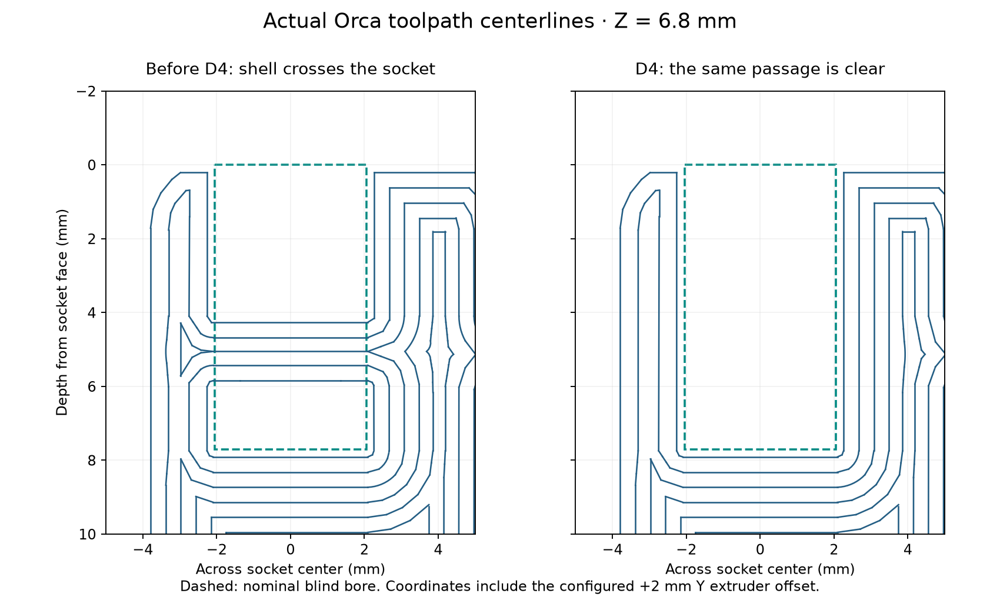
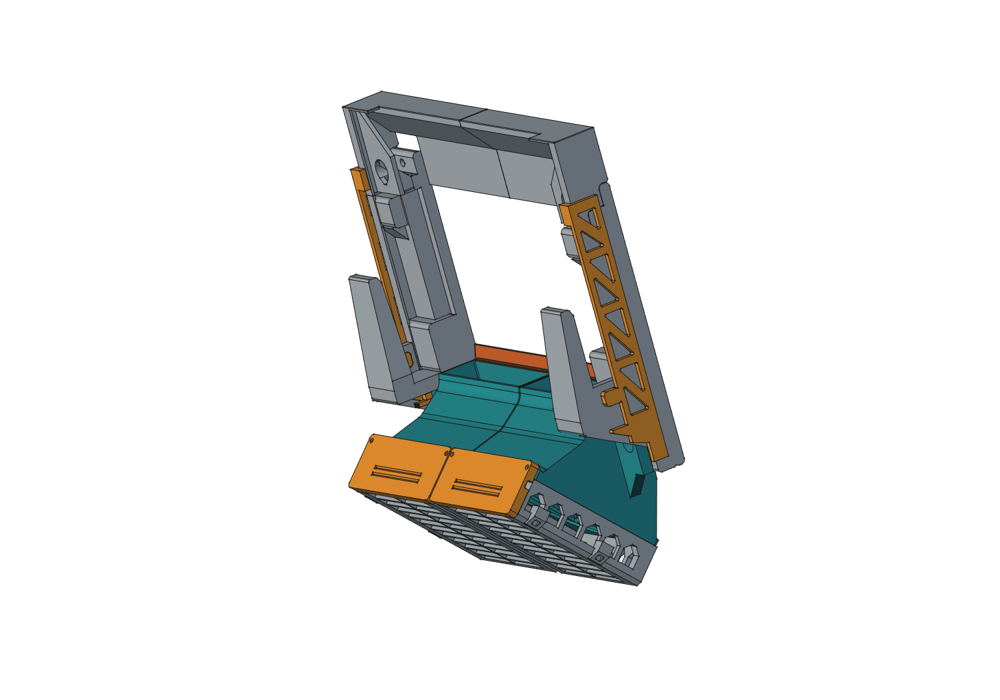

Left duct · D4
4h 26m 57s · 133.64 g estimated PolyLite ASA
03_left_fan_duct_D4.3mf
REV H D4 / PROTOTYPE HOTPATCH
D4 removes the duct-wall material that crossed the four pin sockets. It keeps their original 4.1 mm diameter and blind bottoms.
Download the complete D4 hotpatch ZIP ↓CAD and Orca toolpath checks pass. Physical pin seating, retention and removal after this correction still need confirmation.
The earlier construction cut the bosses, then added the sloping duct shell. That union restored plastic inside the holes. D4 repeats the original bore cuts after the finished duct union.
The fix removes about 42.08 mm³ per duct within the original bores. The arm interfaces and tray grooves are preserved. All other installed parts match the bundled prepatch model.

Open each .3mf as an OrcaSlicer project to keep its geometry, orientation, support enforcer and reviewed settings. The projects use a Bambu Lab P1S, 0.4 mm nozzle, Polymaker PolyLite ASA, 0.20 mm layers, six walls and 100% rectilinear infill. Review the settings for the actual printer and spool before printing.
The ZIP also includes STL, STEP and geometry-only 3MF alternatives. Those formats do not include the complete process setup.
4h 26m 57s · 133.64 g estimated PolyLite ASA
03_left_fan_duct_D4.3mf
4h 26m 1s · 133.65 g estimated PolyLite ASA
04_right_fan_duct_D4.3mf
Native-model scope: the full assembly includes the earlier D3 duct reinforcement, T3 selected tray fit, R2 retainers/keepers and two optional B1 rear baffles. Those fit revisions are newer than the older public C1 snapshot. This hotpatch supplies only the two duct prints; the exact prepatch source and checks are included in the repository.

A controlled cleanup may recover an existing duct. The following dimensions were checked in the nominal model; the physical result is still unconfirmed.
The 6.0 mm limit includes the pointed tip. Model checks with 90°, 118° and 135° drill points leave at least 1.7 mm to the blind bottom, clear the unwanted pin obstruction and preserve intended crown contact. Plastic can remain behind the pin tip without obstructing it.
These checks do not establish printed dimensions, support removal, strength, ASA creep or physical pin forces. Read the native validation · Checksums and release record.